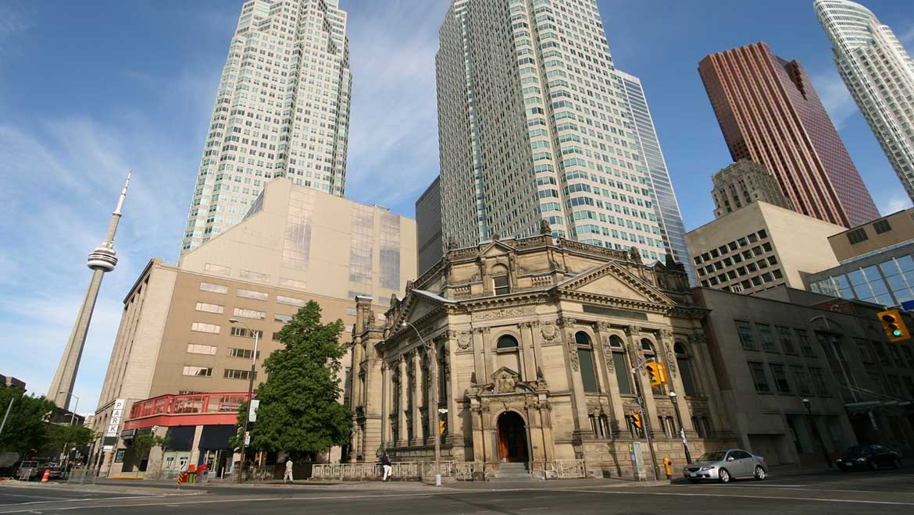

-
Ice Skating

If you are in Canada during the winter months, you may be lucky enough to get to go ice skating. Considering how cold it can get there, a frozen-over lake is a perfect place to go skating. if you are wondering why I recommend The small rush of adrenaline trying to stay just standing up. Speed around and just plain go with ease. The falling down, the hesitation, the countless crashing into things, falling on your butt, or the "I don't know if I can do this" yet immediately after that you do it perfectly all of those disasters slowly happen less and less. The increasing feeling of being awesome at skating makes all that work well worth it. Your confidence goes up, and you go to do the hardest tricks. This is why I recommend ice skating.
-
Travel To Historic Places
While traveling to a new place, it always a good idea to get yourself submerged in its culture. A great way to do that is go to a local museum. a couple locations to try out are The Hockey hall of fame, The Canadian museum of history or the Canadian science and technology museum
-
Learn Local French

Learning a new language is always an exciting experience because it feels like you will see and understand more of the world. There are a few ways you could go about learning more about the French language in Canada.